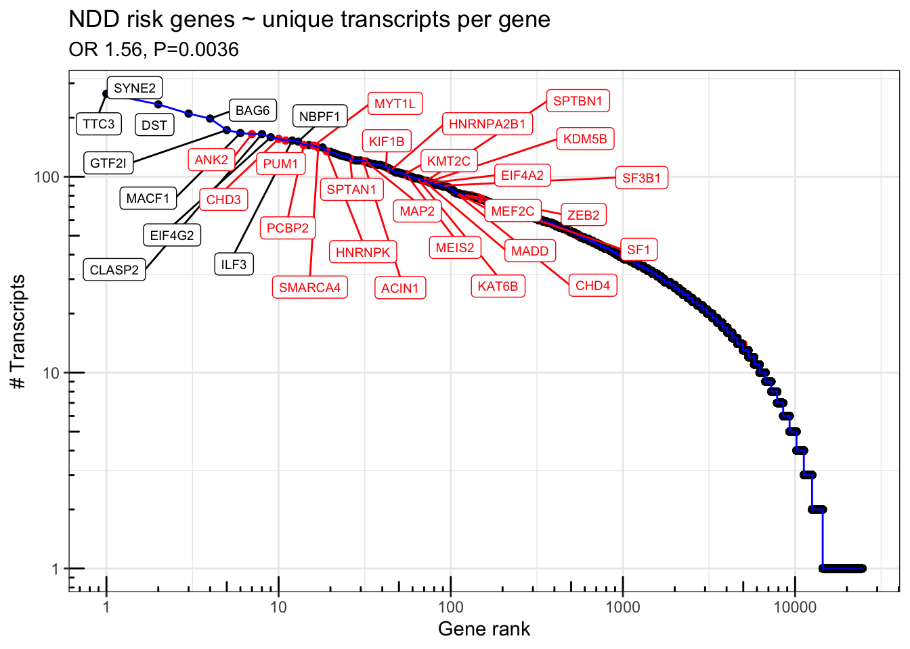
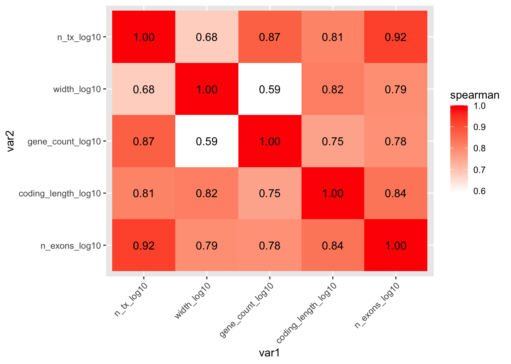
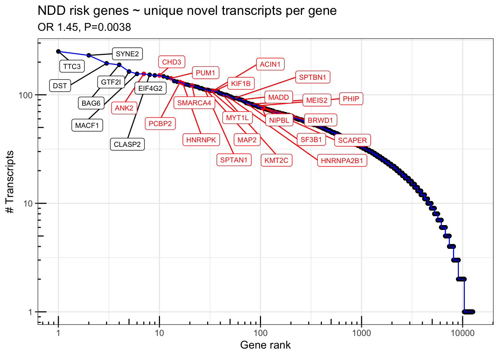

suppressPackageStartupMessages({
library(IsoformSwitchAnalyzeR)
library(rtracklayer)
library(ggrepel)
library(scales)
library(GenomicFeatures)
library(DescTools)
library(tidyverse)
library(magrittr)
})
colorVector = c(
"Known" = "#009E73",
"ISM" = "#0072B2",
"ISM_Prefix" = "#005996",
"ISM_Suffix" = "#378bcc",
# "ISM_Both" = "#0072B2",
"NIC" = "#D55E00",
"NNC" = "#E69F00",
"Other" = "#000000"
)
colorVector_ismSplit = colorVector[-2]Figure 1 - BulkTxomeAnalysis REVISION1
Load Data
if(!file.exists("data/working/bulkTxome.Rdata")) {
talon_gtf = rtracklayer::import("data/cp_vz_0.75_min_7_recovery_talon.gtf.gz")
tx.isoseq = talon_gtf %>% as_tibble() %>% filter(type == "transcript")
sqanti_gtf = rtracklayer::import("data/sqanti/cp_vz_0.75_min_7_recovery_talon_corrected.gtf.cds.gtf.gz")
tx.sqanti = sqanti_gtf %>% as_tibble() %>% filter(type == "transcript")
gencode_gtf = rtracklayer::import("ref/gencode.v33lift37.annotation.gtf.gz")
tx.gencode = gencode_gtf %>% as_tibble() %>% filter(type == "transcript")
txdb.gencode = makeTxDbFromGRanges(gencode_gtf)
gencodelengths= transcriptLengths(txdb.gencode)
txdb.isoseq = makeTxDbFromGRanges(talon_gtf)
isoSeqLengths = transcriptLengths(txdb.isoseq)
samps = tribble(
~sample_id, ~condition,
"VZ_209", "VZ",
"VZ_334", "VZ",
"VZ_336", "VZ",
"CP_209", "CP",
"CP_334", "CP",
"CP_336", "CP"
) %>%
dplyr::mutate(
dplyr::across(condition, as_factor)
)
cts = read_table("data/cp_vz_0.75_min_7_recovery_talon_abundance_filtered.tsv.gz")
cts.collapse = cts %>%
mutate(
VZ_209 = rowSums(across(matches("209_.*_VZ"))),
VZ_334 = rowSums(across(matches("334_.*_VZ"))),
VZ_336 = rowSums(across(matches("336_.*_VZ"))),
CP_209 = rowSums(across(matches("209_.*_CP"))),
CP_334 = rowSums(across(matches("334_.*_CP"))),
CP_336 = rowSums(across(matches("336_.*_CP"))),
.keep = "unused"
) %>%
dplyr::select(!c("gene_ID", "transcript_ID", "annot_transcript_name")) %>%
dplyr::rename(
gene_id = "annot_gene_id",
transcript_id = "annot_transcript_id",
gene_name = "annot_gene_name"
) %>%
mutate(
gene_novelty = as.factor(gene_novelty),
transcript_novelty = as.factor(transcript_novelty),
ISM_subtype = ISM_subtype %>% na_if("None") %>% as.factor()
)
cts$counts = rowSums(as.matrix(cts.collapse[,9:14]))
cts$novelty2 = as.character(cts$transcript_novelty)
cts$novelty2[which(cts$novelty2=="ISM" & cts$ISM_subtype=="Prefix")] = "ISM_Prefix"
cts$novelty2[which(cts$novelty2=="ISM" & cts$ISM_subtype=="Suffix")] = "ISM_Suffix"
cts$novelty2[cts$novelty2 %in% c("Antisense", "Genomic", "Intergenic", "ISM")] = "Other"
cts$novelty2 = factor(cts$novelty2,levels=c("Known", "ISM_Prefix", "ISM_Suffix", "NIC", "NNC", "Other"))
TableS1 = tx.isoseq %>% dplyr::select(gene_id, transcript_id, gene_name, transcript_name, seqnames, start, end, strand, transcript_length=width, source, gene_status, gene_type, transcript_status,transcript_type, havana_transcript, ccdsid, protein_id)
TableS1 = TableS1 %>% left_join(cts %>% dplyr::select(transcript_id=annot_transcript_id, transcript_novelty, ISM_subtype, transcript_novelty2 = novelty2, n_exons, cds_length = length, expression_counts = counts))
TableS1$expression_TPM = TableS1$expression_counts / (sum(TableS1$expression_counts / 1000000))
write_tsv(TableS1, file="output/tables/TableS1_transcript_annotation.tsv")
save.image("data/working/bulkTxome.Rdata")
} else {
load("data/working/bulkTxome.Rdata")
}Analyses of transcripts per gene & disease
NDD risk genes ~ unique transcipts per gene
source("code/risk_genes.R")Warning: One or more parsing issues, see `problems()` for detailsRows: 18321 Columns: 26
── Column specification ────────────────────────────────────────────────────────
Delimiter: "\t"
chr (8): gene_id, group, OR (PTV), OR (Class I), OR (Class II), OR (PTV) up...
dbl (16): Case PTV, Ctrl PTV, Case mis3, Ctrl mis3, Case mis2, Ctrl mis2, P ...
lgl (2): De novo mis3, De novo mis2
ℹ Use `spec()` to retrieve the full column specification for this data.
ℹ Specify the column types or set `show_col_types = FALSE` to quiet this message.
Rows: 119958 Columns: 20
── Column specification ────────────────────────────────────────────────────────
Delimiter: "\t"
chr (4): gene_id, group, damaging_missense_fisher_gnom_non_psych_OR, ptv_fi...
dbl (16): n_cases, n_controls, damaging_missense_case_count, damaging_missen...
ℹ Use `spec()` to retrieve the full column specification for this data.
ℹ Specify the column types or set `show_col_types = FALSE` to quiet this message.
Rows: 71456 Columns: 12
── Column specification ────────────────────────────────────────────────────────
Delimiter: "\t"
chr (2): gene_id, group
dbl (9): xcase_lof, xctrl_lof, pval_lof, xcase_mpc, xctrl_mpc, pval_mpc, xca...
lgl (1): pval_infrIndel
ℹ Use `spec()` to retrieve the full column specification for this data.
ℹ Specify the column types or set `show_col_types = FALSE` to quiet this message.risk_genes = read.csv("ref/ASD+SCZ+DDD_2022.csv")
pLI_scores = read.table('ref/pLI_scores.ensid.txt',header = T)
asd_genes = risk_genes$Gene[risk_genes$Set=="ASD (SFARI score 1)"]
ddd_genes = risk_genes$Gene[risk_genes$Set=="DDD (Kaplanis et al. 2019)"]
geneCounts = cts %>% group_by(gene_id=substr(annot_gene_id,1,15)) %>% summarise(gene_count = sum(counts))
geneCounts$gene_count = geneCounts$gene_count / (sum(geneCounts$gene_count) / 1000000)
talon_exons = talon_gtf[talon_gtf$type == "exon"]
#talon_exons_novel = talon_gtf[talon_gtf$type == "exon" & talon_gtf$transcript_status == "NOVEL"]
talon_exons_by_gene = split(talon_exons, talon_exons$gene_id)
#talon_exons_by_gene_novel = split(talon_exons_novel, talon_exons_novel$gene_id)
geneLengths = enframe(
sum(width(GenomicRanges::reduce(ranges(talon_exons_by_gene)))),
name = "gene_id",
value = "coding_length"
) %>%
left_join(
enframe(
max(end(talon_exons_by_gene)) - min(start(talon_exons_by_gene)) + 1,
name = "gene_id",
value = "talon_width" # due to novel/unexpressed transcripts, talon gene width can differ from gencode gene width
)
) %>%
# left_join(
# enframe(
# sum(width(GenomicRanges::reduce(ranges(talon_exons_by_gene_novel)))),
# name = "gene_id",
# value = "coding_length_novel"
# )
# ) %>%
mutate(gene_id = substr(gene_id, 1, 15))Joining, by = "gene_id"df <- talon_gtf %>% as_tibble() %>%
mutate(gene_id = str_sub(gene_id, 1, 15)) %>%
group_by(gene_id) %>%
summarize(n_transcripts = n_distinct(na.omit(transcript_id)), n_exons = n_distinct(na.omit(exon_id))) %>%
ungroup()
df <- as_tibble(gencode_gtf) %>% dplyr::filter(type=="gene") %>% mutate(gene_id=substr(gene_id,0,15)) %>% right_join(df, by="gene_id")
df <- df %>% left_join(geneCounts)Joining, by = "gene_id"df <- df %>% left_join(geneLengths)Joining, by = "gene_id"df <- pLI_scores %>% as_tibble() %>% dplyr::select(gene_id=gene, pLI) %>% right_join(df)Joining, by = "gene_id"df$gene_rank = rank(-df$n_transcripts, ties.method = 'first')
df$DDD = FALSE
df$DDD[df$gene_name %in% c(asd_genes, ddd_genes)] = TRUE
df = rareVar.binary %>% as_tibble(rownames = "gene_id") %>% right_join(df)Joining, by = "gene_id"s=summary(glm(NDD.fuTADA ~ log10(n_transcripts) + log10(width) + log10(gene_count) + log10(coding_length), data=df %>% filter(gene_type == "protein_coding"), family='binomial'))
print(s)
Call:
glm(formula = NDD.fuTADA ~ log10(n_transcripts) + log10(width) +
log10(gene_count) + log10(coding_length), family = "binomial",
data = df %>% filter(gene_type == "protein_coding"))
Deviance Residuals:
Min 1Q Median 3Q Max
-1.1142 -0.3808 -0.2840 -0.1897 3.5966
Coefficients:
Estimate Std. Error z value Pr(>|z|)
(Intercept) -11.13478 0.61994 -17.961 < 2e-16 ***
log10(n_transcripts) 0.44281 0.15209 2.912 0.00360 **
log10(width) 0.47907 0.08761 5.468 4.54e-08 ***
log10(gene_count) 0.21934 0.07888 2.781 0.00542 **
log10(coding_length) 1.39117 0.20486 6.791 1.11e-11 ***
---
Signif. codes: 0 '***' 0.001 '**' 0.01 '*' 0.05 '.' 0.1 ' ' 1
(Dispersion parameter for binomial family taken to be 1)
Null deviance: 6026.3 on 13953 degrees of freedom
Residual deviance: 5515.8 on 13949 degrees of freedom
(1193 observations deleted due to missingness)
AIC: 5525.8
Number of Fisher Scoring iterations: 6exp(s$coefficients[,1]) (Intercept) log10(n_transcripts) log10(width)
1.459579e-05 1.557078e+00 1.614573e+00
log10(gene_count) log10(coding_length)
1.245254e+00 4.019550e+00 Fig1H = df %>% mutate(NDD.fuTADA = NDD.fuTADA %>% as.logical() %>% replace_na(F)) %>%
ggplot(aes(x = gene_rank, y = n_transcripts, color=NDD.fuTADA)) +
geom_point() + geom_line(color='blue') +
geom_label_repel(data = . %>% filter(n_transcripts > 150 | (n_transcripts > 80 & NDD.fuTADA==TRUE)),aes(label = gene_name),force = 30, direction='both',nudge_y=-.1,nudge_x = .3, max.iter = 10000,max.overlaps = 50, size=2.5) + scale_color_manual(values=c("TRUE" = "red", "FALSE" = "black")) + scale_y_log10() + scale_x_log10() + theme_bw() + annotation_logticks() + theme(legend.position = 'none') + labs(x="Gene rank", y="# Transcripts") + ggtitle("NDD risk genes ~ unique transcripts per gene",subtitle=paste0("OR ",signif(exp(s$coefficients[2,1]),3),", P=", signif(s$coefficients[2,4],2)))
Fig1H
ggsave(file="output/figures/revision1/Fig1K_codingLen_NDD.fuTADA.pdf",Fig1H, width = 8, height=3)n_exons and n_transcripts are closely correlated:
summary(glm(
DDD ~ log10(width) + log10(gene_count) + log10(coding_length) + log10(n_exons),
data=df %>% filter(gene_type == "protein_coding"),
family='binomial'
))
Call:
glm(formula = DDD ~ log10(width) + log10(gene_count) + log10(coding_length) +
log10(n_exons), family = "binomial", data = df %>% filter(gene_type ==
"protein_coding"))
Deviance Residuals:
Min 1Q Median 3Q Max
-0.9874 -0.2504 -0.1683 -0.0992 3.6740
Coefficients:
Estimate Std. Error z value Pr(>|z|)
(Intercept) -13.93640 0.85248 -16.348 < 2e-16 ***
log10(width) 0.65078 0.12899 5.045 4.53e-07 ***
log10(gene_count) 0.34755 0.09001 3.861 0.000113 ***
log10(coding_length) 1.25954 0.30160 4.176 2.96e-05 ***
log10(n_exons) 1.33657 0.27354 4.886 1.03e-06 ***
---
Signif. codes: 0 '***' 0.001 '**' 0.01 '*' 0.05 '.' 0.1 ' ' 1
(Dispersion parameter for binomial family taken to be 1)
Null deviance: 3522.0 on 15146 degrees of freedom
Residual deviance: 3099.3 on 15142 degrees of freedom
AIC: 3109.3
Number of Fisher Scoring iterations: 7exp(1.33657)[1] 3.805967summary(glm(
DDD ~ log10(n_transcripts) + log10(width) + log10(gene_count) + log10(coding_length),
data=df %>% filter(gene_type == "protein_coding"),
family='binomial'
))
Call:
glm(formula = DDD ~ log10(n_transcripts) + log10(width) + log10(gene_count) +
log10(coding_length), family = "binomial", data = df %>%
filter(gene_type == "protein_coding"))
Deviance Residuals:
Min 1Q Median 3Q Max
-1.0179 -0.2493 -0.1694 -0.1034 3.6147
Coefficients:
Estimate Std. Error z value Pr(>|z|)
(Intercept) -14.0374 0.8930 -15.720 < 2e-16 ***
log10(n_transcripts) 0.6113 0.2189 2.792 0.00523 **
log10(width) 0.6958 0.1267 5.493 3.96e-08 ***
log10(gene_count) 0.3081 0.1164 2.646 0.00813 **
log10(coding_length) 1.5574 0.2946 5.286 1.25e-07 ***
---
Signif. codes: 0 '***' 0.001 '**' 0.01 '*' 0.05 '.' 0.1 ' ' 1
(Dispersion parameter for binomial family taken to be 1)
Null deviance: 3522 on 15146 degrees of freedom
Residual deviance: 3117 on 15142 degrees of freedom
AIC: 3127
Number of Fisher Scoring iterations: 7exp(0.6113)[1] 1.842826mycor = df %>% transmute(
n_tx_log10 = log10(n_transcripts),
width_log10 = log10(talon_width),
gene_count_log10 = log10(gene_count),
coding_length_log10 = log10(coding_length),
n_exons_log10 = log10(n_exons)
) %>% cor(method = "spearman")
mycor n_tx_log10 width_log10 gene_count_log10 coding_length_log10
n_tx_log10 1.0000000 0.6774404 0.8713938 0.8105970
width_log10 0.6774404 1.0000000 0.5917691 0.8174833
gene_count_log10 0.8713938 0.5917691 1.0000000 0.7530141
coding_length_log10 0.8105970 0.8174833 0.7530141 1.0000000
n_exons_log10 0.9222081 0.7889066 0.7849993 0.8350145
n_exons_log10
n_tx_log10 0.9222081
width_log10 0.7889066
gene_count_log10 0.7849993
coding_length_log10 0.8350145
n_exons_log10 1.0000000myorder = colnames(mycor)
mycor %>%
as_tibble(rownames = "var1") %>%
pivot_longer(cols = !var1, names_to = "var2", values_to = "spearman") %>%
mutate(across(c(var1, var2), factor, levels = myorder)) %>%
ggplot(aes(x=var1, y=var2, fill=spearman)) +
scale_fill_gradient(low = "white", high = "red") +
geom_tile() +
geom_text(aes(label = scales::number(spearman, accuracy = 0.01))) +
scale_x_discrete(guide = guide_axis(angle = 45)) +
scale_y_discrete(limits = rev)
ggsave(file="output/figures/revision1/Fig1K_correlations.pdf", width = 5, height=4)FigS3: NDD risk genes ~ unique NOVEL transcipts per gene
df.novel <- talon_gtf %>% as_tibble() %>% filter(type=="transcript", transcript_id %in% cts$annot_transcript_id[cts$novelty2!="Known"]) %>%
mutate(gene_id = str_sub(gene_id, 1, 15)) %>%
group_by(gene_id) %>%
summarize(n_transcripts = n_distinct(na.omit(transcript_id)), n_exons = n_distinct(na.omit(exon_id))) %>%
ungroup()
df.novel <- as_tibble(gencode_gtf) %>% dplyr::filter(type=="gene") %>% mutate(gene_id=substr(gene_id,0,15)) %>% right_join(df.novel, by="gene_id")
df.novel <- df.novel %>% left_join(geneCounts)Joining, by = "gene_id"df.novel <- df.novel %>% left_join(geneLengths)Joining, by = "gene_id"df.novel$gene_rank = rank(-df.novel$n_transcripts, ties.method = 'first')
df.novel$DDD = FALSE
df.novel$DDD[df.novel$gene_name %in% c(asd_genes, ddd_genes)] = TRUE
df.novel = rareVar.binary %>% as_tibble(rownames = "gene_id") %>% right_join(df.novel)Joining, by = "gene_id"s=summary(glm(NDD.fuTADA ~ log10(n_transcripts) + log10(width) + log10(gene_count) + log10(coding_length), data=df.novel %>% filter(gene_type == "protein_coding"), family='binomial'))
print(s)
Call:
glm(formula = NDD.fuTADA ~ log10(n_transcripts) + log10(width) +
log10(gene_count) + log10(coding_length), family = "binomial",
data = df.novel %>% filter(gene_type == "protein_coding"))
Deviance Residuals:
Min 1Q Median 3Q Max
-1.1343 -0.4124 -0.3188 -0.2344 3.1335
Coefficients:
Estimate Std. Error z value Pr(>|z|)
(Intercept) -11.16258 0.70920 -15.740 < 2e-16 ***
log10(n_transcripts) 0.37199 0.12866 2.891 0.003837 **
log10(width) 0.53523 0.09565 5.596 2.20e-08 ***
log10(gene_count) 0.34925 0.08999 3.881 0.000104 ***
log10(coding_length) 1.30727 0.22199 5.889 3.89e-09 ***
---
Signif. codes: 0 '***' 0.001 '**' 0.01 '*' 0.05 '.' 0.1 ' ' 1
(Dispersion parameter for binomial family taken to be 1)
Null deviance: 5174.0 on 10453 degrees of freedom
Residual deviance: 4808.2 on 10449 degrees of freedom
(751 observations deleted due to missingness)
AIC: 4818.2
Number of Fisher Scoring iterations: 6sort(exp(s$coefficients[,1])) (Intercept) log10(gene_count) log10(n_transcripts)
1.419559e-05 1.418007e+00 1.450619e+00
log10(width) log10(coding_length)
1.707839e+00 3.696057e+00 FigS3 = df.novel %>% mutate(NDD.fuTADA = NDD.fuTADA %>% as.logical() %>% replace_na(F)) %>%
ggplot(aes(x = gene_rank, y = n_transcripts, color=NDD.fuTADA)) +
geom_point() + geom_line(color='blue') +
geom_label_repel(data = . %>% filter(n_transcripts > 150 | (n_transcripts > 75 & NDD.fuTADA==TRUE)),aes(label = gene_name),force = 30, direction='both',nudge_y=-.1,nudge_x = .3, max.iter = 10000,max.overlaps = 50, size=2.5) + scale_color_manual(values=c("TRUE" = "red", "FALSE" = "black")) + scale_y_log10() + scale_x_log10() + theme_bw() + annotation_logticks() + theme(legend.position = 'none') + labs(x="Gene rank", y="# Transcripts") + ggtitle("NDD risk genes ~ unique novel transcripts per gene",subtitle=paste0("OR ",signif(exp(s$coefficients[2,1]),3),", P=", signif(s$coefficients[2,4],2)))
FigS3
ggsave(file="output/figures/revision1/FigS3G_codingLen_NDD.fuTADA_6in.pdf",FigS3, width = 6, height=3)